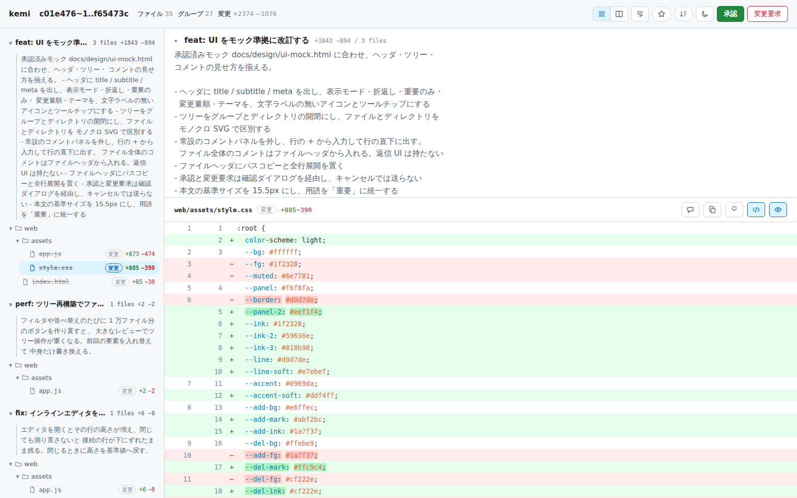
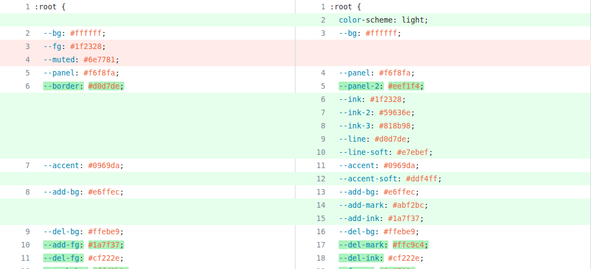
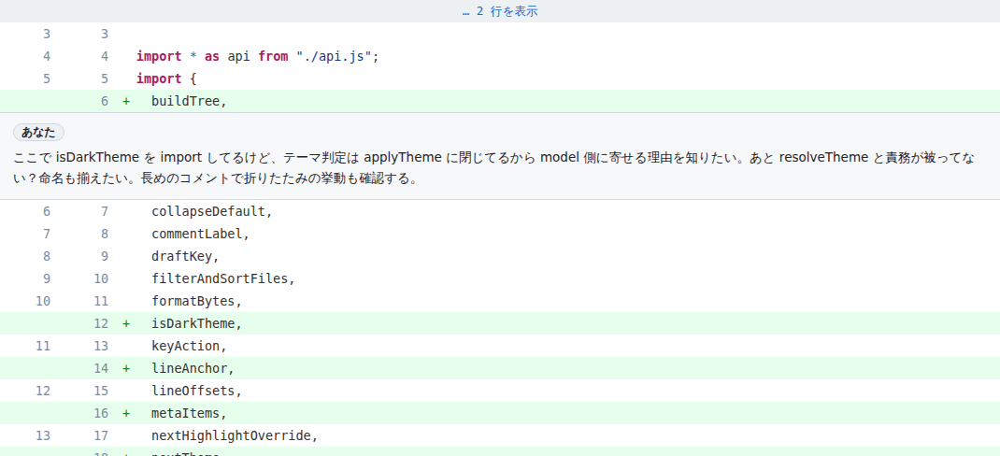

2026-09-11 に全項目を採用。振る舞いの正典は docs/spec/kemi.md で、このモックと食い違う箇所は仕様が正しい（とくにグループ単位は案 A と C の両取りになった: R-UNIT、結果の読み出しは kemi --result: R-RESULT）。
使ってみて挙がった 7 点と、実際に動かして見つけた問題への改善案。各節に「現状（実際のスクリーンショットか、同じ内容の再現）」と「提案」を並べる。印の意味: 不具合 仕様どおりに動いていない / 設計変更 仕様の範囲内で見た目・操作を変える / 仕様判断 docs/spec/kemi.md の変更が要る。
上が今の画面（1600×1000 で撮影）。差分が見える高さは 1000px 中 554px しかなく、上の 3 段（上部バー・グループ説明・ファイルヘッダ）が残りを使っている。下が提案。グループの説明（コミット本文 = why）は既定で畳み、「見てほしい点」（watch）だけは常に 1 行で見せる。ファイルの「見た」とグループの進捗を藍色で、コメントを付箋色で示す。
現状 — 3 ファイルとも「見た」を付けた状態。ツリーでは取り消し線が付くだけで、グループ見出しは何も変わらない

提案 — 同じ内容を提案デザインで再現。文字サイズは今の仕様どおり（本文 15.5px、コード 13.5px、行 24px）。クリックできる箇所: 説明を開く、コメントの札、見た
承認済みモック docs/design/ui-mock.html に合わせ、ヘッダ・ツリー・コメントの見せ方を揃える。
3 files +1843 −894）は変わらない。ファイル名が灰色の取り消し線になるだけで、選択中の行では背景色に埋もれる。web/assets/app.js:444-457）が「見た」の数を持っていない。取り消し線は「削除されたファイル」にも見える。app.js:1721-1762）。このあいだに「見た」を押すと前のファイルに付く。実際に再現した（開発ビルドで読み込み約 0.5 秒）。読み込み中はヘッダを新しいファイル名に切り替え、操作を無効にする。現状（ツリー部分の再現）
提案 — 完了したグループは印が付き、未完了は残り数が見える
web/assets/app.js が 27 グループ中 21 グループに出てくる。最初のコミット（c01e476）の後に app.js を触ったコミットが 20 件あり、c01e476 の時点と最終形を比べると 90 行が消えるか書き換わっている（git diff --numstat c01e476 f65473c で +327 −90）。最初のグループで読んだ行の一部は、最終形には残っていない。R-INPUT-2 の変更と、表示時の git blame 相当の計算が要る。--group-by file か manifest を使うよう決める。今日からできるが、--group-by file ではコミットの理由が消える。案 A の見た目 — ハンクの見出しに由来コミットを出す（複数のコミットが触った塊には複数並ぶ）。クリックでそのコミットの理由が開く
app.js は差分の高さが 33,456px、見える高さが 554px で、約 60 画面ぶんある。キー操作は j/k のファイル移動だけで、ファイル内の変更へ飛ぶ手段がない。言葉にしづらい違和感の候補を、コードと画面で確かめた順に並べる。上の 2 つは確認済みの事実で、見辛さへの寄与は推測。
web/assets/model.js:77-92）。git diff や GitHub は「消した塊」の後に「足した塊」を出すので、旧コードも新コードも続けて読める。交互だとどちらも 1 行ずつ途切れる。テスト（model.test.js:133）は 1 行の書き換えしか見ていないので、意図した並びかは未確認。web/assets/style.css:772-885 に 2 列の書き換え行の指定が無い）。また、追加だけの行では空の左側まで緑、削除だけの行では空の右側まで赤になる。+/− の記号も細い（推測: 視線の手がかりが少ない）。現状（同じ内容の再現）
提案 — 消した 3 行の後に足した 7 行。行番号の欄に色、見出しに位置
現状（実際のスクリーンショット、web/assets/style.css）— 旧 6 行目 --border は背景が白で、変更箇所が緑。旧 3–4 行目の削除は、空の右側まで赤

提案 — 旧側は赤、新側は緑、相手の無い側は斜線
model.js:439）ので、選んだ範囲の途中でコードが割れる。「あなた」の札は 1 人で使う道具では情報がない。crates/kemi-server/src/api.rs:460-480）。誤字もそのままエージェントへ渡る。追加には R-COMMENT の変更が要る。現状（実際のスクリーンショット、試しに付けたコメント）

src/main.rs:288-300）。結果はメモリにしか無いので、エージェントがその出力を受け取っていなければ消える。ページ側は「JSON を出力して終了しました」と出すだけで、受け取られたかは分からない。~/.claude/skills/diff-review-viewer/SKILL.md が旧ツール向けのままで、「The command keeps running until interrupted」（中断するまで動き続ける）と書いてある。これを読んだエージェントは kemi が自分で終わることも、終わったときに JSON を読む必要があることも知らない。TODO.md の「納品後の環境更新」に更新が残っている。ただし、落ちた回にエージェントが実際にどう起動していたかは確認できていない（推測）。kemi --result で読めるようにする。「標準出力が唯一の出口」（R-SUBMIT）と「セッションはメモリのみ」（R-SERVE）に反するので仕様変更になる。手順書の修正で落ちなくなるなら不要。
確認ダイアログ — 送る中身が分かる
完了画面 — 受け取られなかったときの逃げ道を置く
kemi は結果を標準出力に書いて終了しました。エージェントが反応しないときは、この JSON をコピーして会話に貼ってください。
{"kemi":1,"title":"c01e476~1..f65473c","verdict":"approved",
"approval":[],"comments":[{"id":"c1","group_id":"c01e4761…",
"path":"web/index.html","side":"new","start_line":13,"end_line":14,
"quote":[" <div class=\"title\" id=\"review-title\"></div>", …],
"body":"subtitle を hidden で出し分けるなら…", …}]}
今は GitHub の配色（灰色と青 1 色）そのままで、「選択中」「押されたボタン」「リンク」「展開ボタン」がすべて同じ青。意味ごとに色を分ける。差分の緑と赤は慣習どおり残し、ほかの意味に赤系を使わない（削除と見分けがつかなくなるため）。上部バーのアイコンは仕様（R-VIEW）どおりモノクロのまま。
一か所だけ遊ぶ: 名前の由来「閲する」から、グループを見終えたときと承認したときに藍色の「閲」の印を押す。
| 意味 | 色 | 使う場所 | 今 |
|---|---|---|---|
| 藍（進捗・見た・主操作） | 見たのチェック、進捗バー、閲の印、選択中のファイル、変更の見出し | 青 1 色が全部を兼ねる | |
| 付箋（コメント） | 吹き出し、コメント件数、位置の帯の印、範囲の線 | 灰色の帯 | |
| 藤（重要・見てほしい点） | 重要バッジ、見てほしい点の枠 | 黄土色（付箋色と取り合うので移す） | |
| 追加 | 行・行番号の欄・変更箇所 | 行番号の欄に色なし | |
| 削除 | 同上 | 同上 |
R-DIST）に触れるかもしれないので、「追 / 削 / 改 / 変」でもよい。feat / fix など）は色を付けず小さな枠で区別するだけにした。色を増やしすぎると、上の意味の色が効かなくなる。